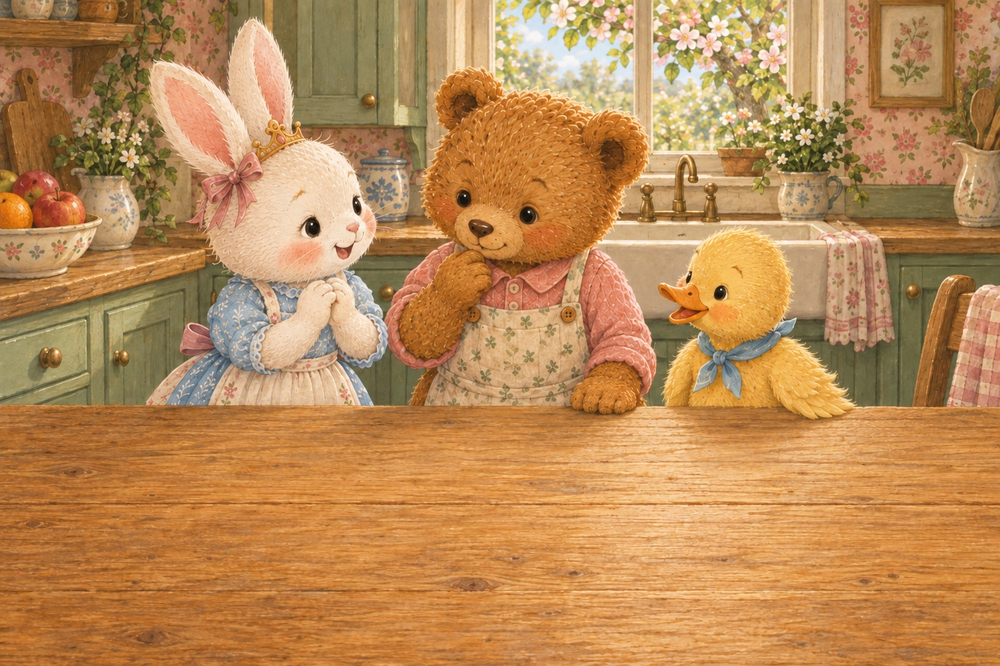

Juice for Our Friends

This is a short interaction sample for the juice story, not the finished revision. New English narration is not recorded yet. The original narrated book is unchanged.
The child can combine up to 2 prepared fruit juices with optional drinking water. The 25 mL scoop and 100 mL cup belong to this screen model, not every household spoon or cup. The record adds the measured portions used; real mixtures need not have perfectly additive final volumes.
These are opaque cups. The ingredient record is not a picture of liquid layers or a simulation of blend colour. No mixture colour is predicted, drawn or graded. The proposed colour-observation activity is still awaiting appropriate evidence.
This is screen play, not a serving recommendation. A grown-up checks real ingredients, allergies, suitable amounts and hygiene, and handles equipment. No child records, microphone, uploads, scores or live AI are used.
The current recipes and measured drinks in this sample will be replaced. Other stories and drawings stay untouched.